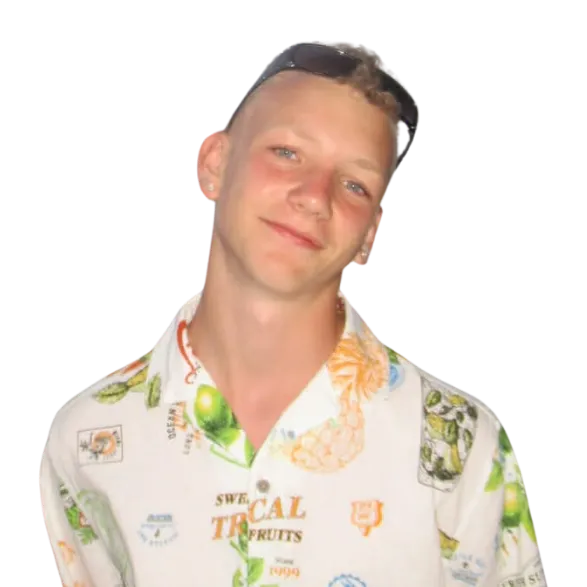

Leader
Hej, jestem Ignacy, znajomi mówią do mnie Igi. Jestem w 3 klasie na profilu biologiczno-chemicznym i w tym roku mam przyjemność koordynować pracę całego zespołu jako lider Gdynia Science Slam 2026. Odpowiadam za wyznaczanie kierunku działań oraz podział zadań w teamie. Poza GSS interesuję się polityką, dlatego od ponad roku jeżdżę po całej Polsce, biorąc udział w konferencjach Model United Nations. Jestem przekonany, że Gdynia Science Slam 2026 będzie najlepszą edycją w historii, dlatego już teraz zapraszam Was do aplikowania na prelegenta. Jeśli natomiast w tym roku nie czujecie, że to Wasz moment na wystąpienia publiczne, zachęcam do aplikowania na widownię lub jako wolontariusz.